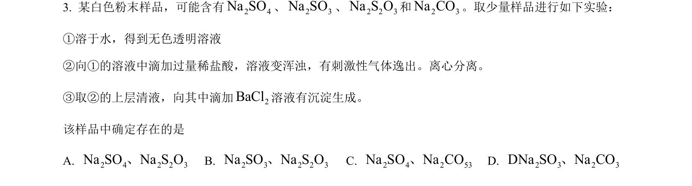
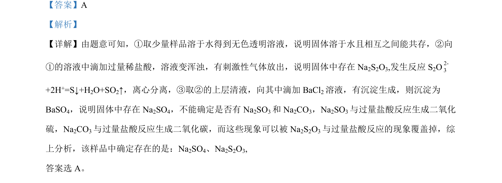

考点：离子反应 物质鉴别 沉淀生成 气体检验

该题考查物质鉴别，通过溶液反应现象推断样品中存在的离子或化合物。

📄 原 PDF 第 2 页：
素材/真题/吉林/2008-2024·（吉林）化学高考真题/2022年高考化学试卷（全国乙卷）（解析卷）.pdf
【答案】A 【解析】 【详解】由题意可知，①取少量样品溶于水得到无色透明溶液，说明固体溶于水且相互之间能共存，②向 ①的溶液中滴加过量稀盐酸，溶液变浑浊，有刺激性气体放出，说明固体中存在 Na2S2O3,发生反应 S2O2-3 +2H+=S↓+H2O+SO2↑，离心分离，③取②的上层清液，向其中滴加 BaCl2溶液，有沉淀生成，则沉淀为 BaSO4，说明固体中存在 Na2SO4，不能确定是否有 Na2SO3和 Na2CO3，Na2SO3与过量盐酸反应生成二氧化 硫，Na2CO3与过量盐酸反应生成二氧化碳，而这些现象可以被 Na2S2O3与过量盐酸反应的现象覆盖掉，综 上分析，该样品中确定存在的是：Na2SO4、Na2S2O3, 答案选 A。